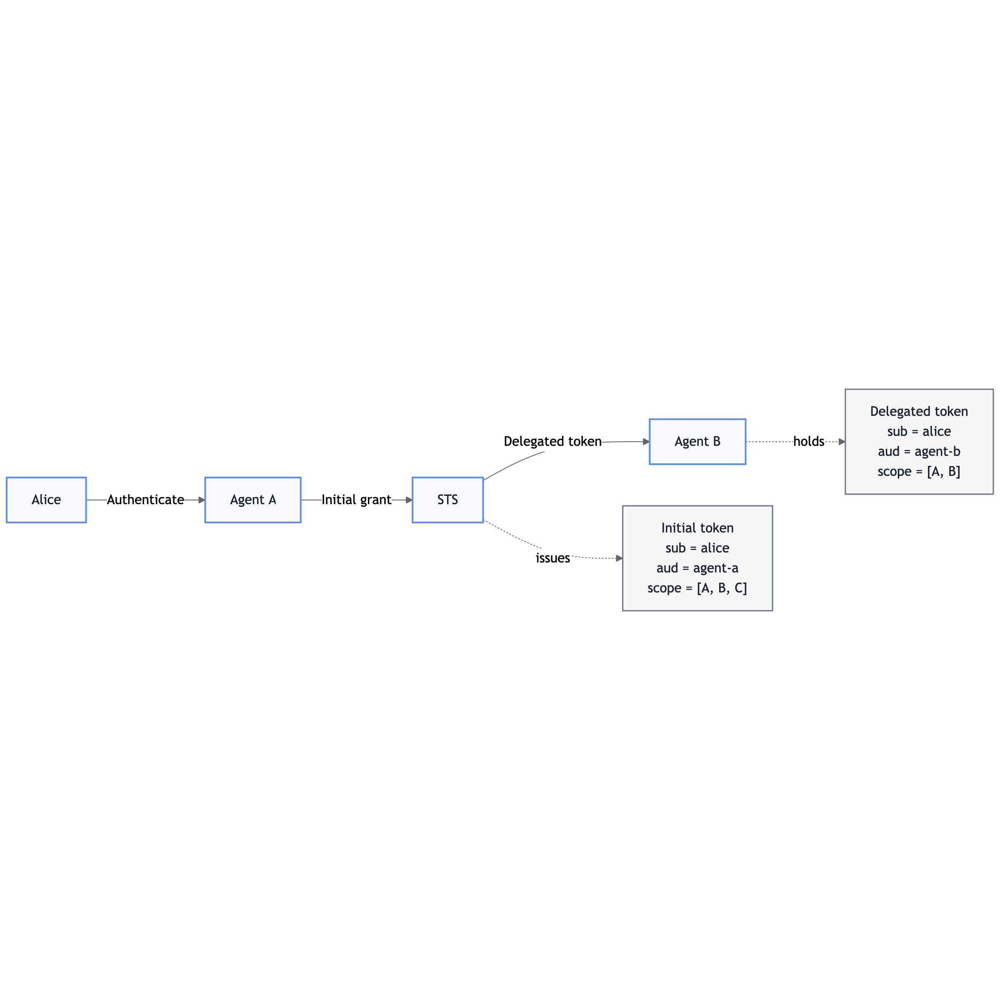
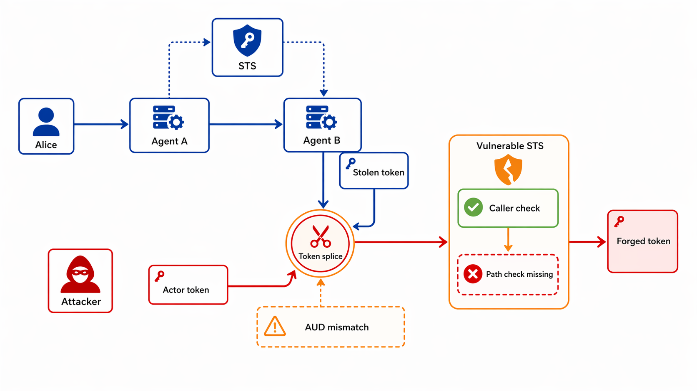
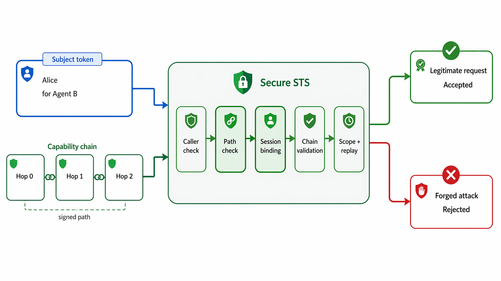

What is OAuth?
OAuth lets software act on a user's behalf without sharing their password via tokens: signed, time-limited passes that specify exactly what is permitted, for how long, and on whose behalf.
1. Background
2. Problem setting
3. Baseline flow
4. Vulnerable attack
5. Secure defence
6. Live demo
7. Results and cost
OAuth lets software act on a user's behalf without sharing their password via tokens: signed, time-limited passes that specify exactly what is permitted, for how long, and on whose behalf.
When a service needs to pass authority further down a chain, each handoff is a delegation hop. Permissions can only narrow at each step.
Example: A user authorises an AI assistant to read their inbox. The agent delegates a narrower credential to a sub-agent that can only schedule meetings.
Represents the original user's authority. It declares who authorised the chain and what they permitted.
sub: the original user (e.g. Alice)aud: the agent this token was issued toscope: the permissions granted at this hopProves the identity of the agent making the request right now. It declares who is presenting the subject token.
sub: the agent currently actingact: records the chain of prior actorsscope: the narrowed permissions being requestedsubject_token.aud matches actor_token.sub. This confirms the subject token was actually issued to the agent now presenting it, not just that both tokens are individually valid.
subject_token.aud == actor_token.act.sub
sub, aud, act, and scope.


Enter-driven. Same attack input, run against both systems.
The caller check passes.
The path check is absent.
A new token is minted for the attacker, creating a delegation path that never existed.
The same attack input enters the secure exchange path.
Path integrity and session validation reject it before minting.
The delegation chain is treated as a security object, not just metadata.
Blocked by nonce freshness checks on the latest capability in the chain.
Blocked by requiring the requested scope to be a strict subset of the previous hop.
Blocked by HMAC-protected capability signatures and chain continuity checks.
| Depth | Avg latency (ms) | Chain size (chars) |
|---|---|---|
| 1 | 0.04 | 580 |
| 2 | 0.09 | 872 |
| 3 | 0.13 | 1164 |
| 4 | 0.18 | 1456 |
| 5 | 0.23 | 1748 |
The vulnerable STS can be driven into minting a forged token using only valid, properly signed inputs.
The secure design changes the execution result for the same attack from acceptance to rejection.
The defence adds sub-millisecond overhead that scales linearly. It is practical for real delegation chains.